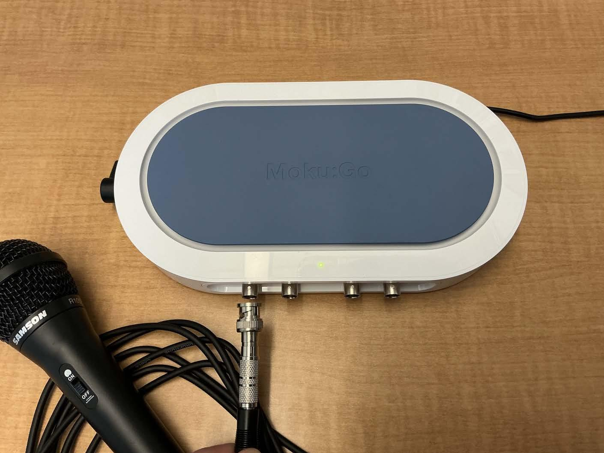
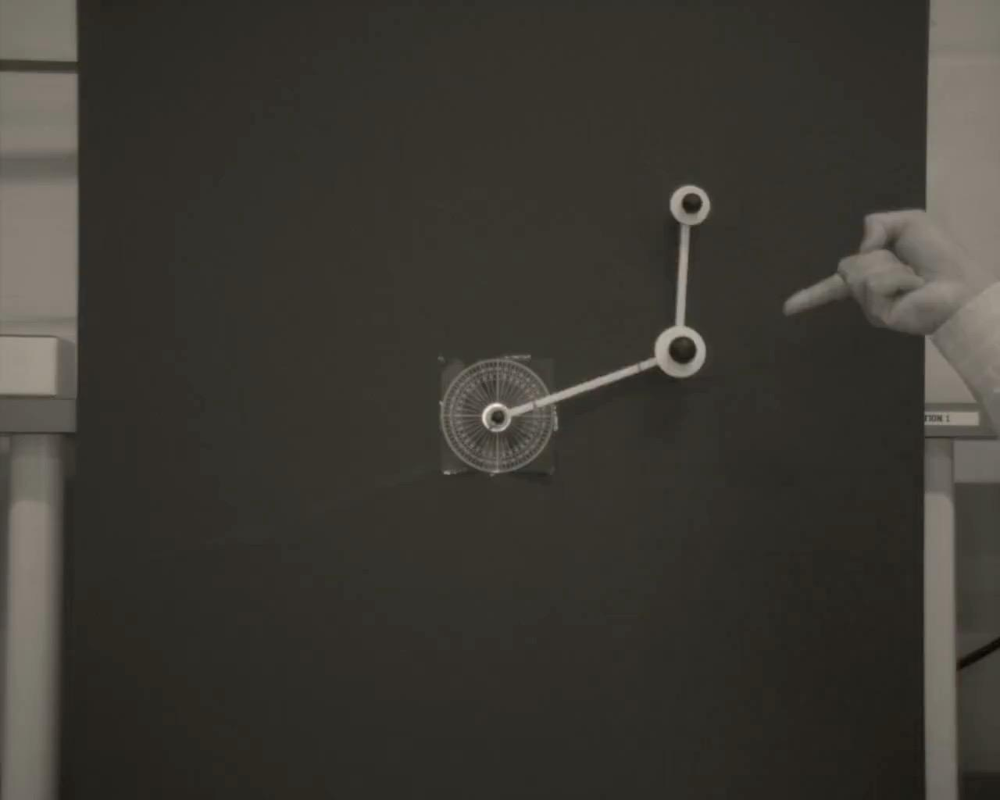
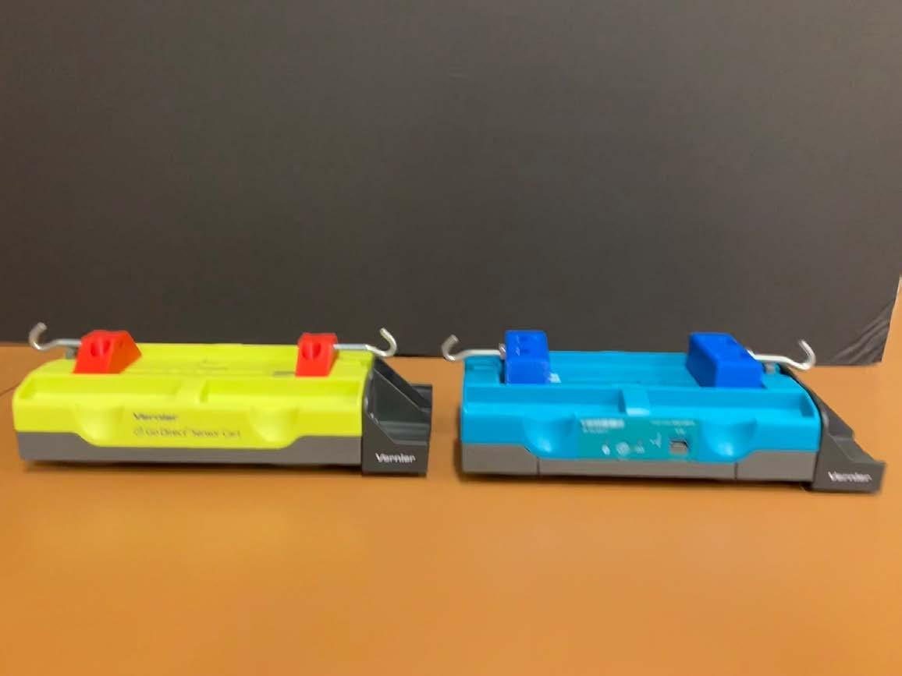
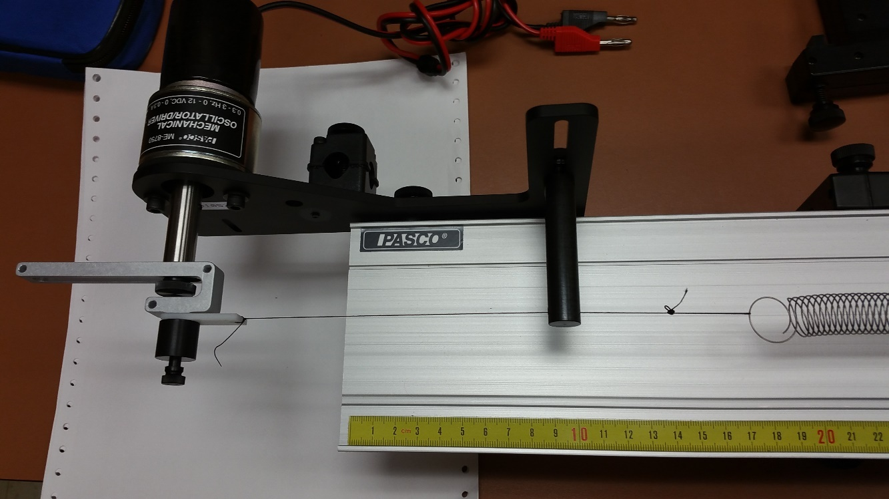
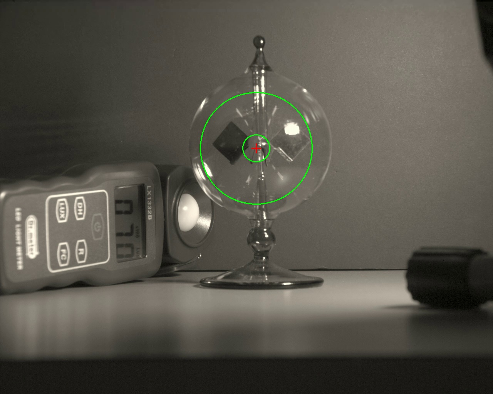

Lecture 01 · September 9, 2026
Orientation and report writing
A 50-minute introduction to the six experiments and the report format.
Course orientation and laboratory reports
MIE 402
Mechanical Engineering Laboratory II
Fall 2026
Prof. Ehsan Roohi · September 9, 2026
Experimental evidence and engineering judgment
Observe and measure
Identify the behavior, then record it with a documented measurement system.
Compare and communicate
Test the model against data and explain what the evidence supports.
Today’s 50-minute session
0–8 min
Course organization and the laboratory workflow
8–23 min
Six experiments, apparatus, measurements, and analysis
23–42 min
Report structure, figures, comparison, and uncertainty
42–48 min
Policies and a short report exercise
48–50 min
First dates and preparation
People, places, and weekly rhythm
Instructor
Prof. Ehsan Roohi · roohie@umass.edu · Gunness Laboratory, Room 1
Graduate teaching assistants
Yuyuan Zhang and Nazila Emamdoost
Theory
Monday, 12:20–1:10 PM · Hasbrouck Laboratory 134
Laboratory / office hours
Lab sections: Tuesday–Friday, Gunness Laboratory 5. Office hours: Friday, 12:20–1:10 PM, Gunness Laboratory 1.
Course grading
| Component | Weight |
|---|---|
| Six pre-labs, equally weighted | 20% |
| Lab 1 report | 10% |
| Combined Labs 2 and 3 report | 25% |
| Combined Labs 4 and 5 report | 25% |
| Lab 6 report | 15% |
| Participation | 5% |
The laboratory workflow
Before the section
Read the procedure, prepare the model, and submit the pre-lab.
During the section
Save raw data, settings, initial conditions, and observations.
After the section
Process the data, compare with theory, and explain the result.
Six experiments and four reports
| Lab | Experiment | Report |
|---|---|---|
| 1 | Dynamic data sampling and frequency analysis | Lab 1 |
| 2 | Single pendulum | Labs 2 + 3 |
| 3 | Double pendulum | Labs 2 + 3 |
| 4 | 1-DOF system: free response | Labs 4 + 5 |
| 5 | 1-DOF system: forced response | Labs 4 + 5 |
| 6 | Radiometer | Lab 6 |
Lab 1: Recording sound

The question
How often must we measure a sound to record its frequency correctly?
The equipment
The microphone turns sound into voltage. Moku:Go records that voltage as numbers.
What you do
Record several sounds. For a steady tone, repeat the recording at different sampling rates.
Lab 1: A recording can show the wrong frequency
Two useful plots
A waveform shows voltage versus time. A frequency spectrum shows which frequencies are present; MATLAB can calculate it with an FFT.
What to look for
With too few samples per cycle, the signal can appear to have a lower frequency. This is called aliasing.
What goes in the report
Compare recordings with their actual sampling rates and durations. Explain which settings gave a reliable frequency estimate.
Saving as MAT makes the measurements easy to load in MATLAB. Changing the file format does not fix a poor recording.
Lab 2: One pendulum
The question
Does a pendulum take the same time to swing when we release it from a larger angle?
The equipment
A pendulum, a high-speed camera, lighting, and a length reference. The camera records the moving rod.
What you do
Release it without pushing. Record small, medium, and large starting angles. Track its position in MATLAB.
Lab 2: Comparing the swing with a model
The measurements
Plot angle versus time. Measure the period over several swings and check whether the swing size decreases.
The model
The small-angle model simplifies the equation of motion. Compare it with the full model as the release angle increases.
What goes in the report
Overlay measured and predicted angles. Compare their periods and explain how the starting angle changes the agreement.
Use the same starting angle, angle direction, and time origin in the measurement and simulation.
Lab 3: Two connected pendulums

The question
How does adding a second moving link change the motion and our ability to predict it?
The equipment
Two connected links, a high-speed camera, and a tracking app that follows both moving joints.
What you do
Record one small-angle case and at least three large-angle cases. Write down both starting angles before each release.
Lab 3: Two angle records to explain
The measurements
Plot each link’s angle versus time. Notice how the two links speed up, slow down, and influence one another.
The comparison
Start the simulation with the measured angles. Compare both links over the same time interval.
What goes in the report
Show where the predictions agree and where they separate from the measurements. Check release conditions and tracking before explaining the difference.
A small difference at release can grow during large motion. An irregular-looking trajectory alone does not prove chaos.
Lab 4: A cart released between springs

The question
What controls how fast the cart moves back and forth, and how quickly that motion dies away?
The equipment
A cart on a track, springs, added masses, and magnetic brakes. A sensor records the cart position.
What you do
Measure mass and spring stiffness. Pull the cart away from rest and let go. Repeat after changing one setting at a time.
Lab 4: Swing time and fading motion
Two features of the plot
Peak spacing gives the period. The decrease in peak height shows how quickly the motion dies away.
Expected trends
More mass usually gives slower motion. Stiffer springs give faster motion. More damping makes the peaks decrease faster.
What goes in the report
Compare the cases using measured frequency and damping. State exactly what changed and connect each trend to the model.
Keep other settings fixed when making a comparison. Include the mass of added brake parts in the total moving mass.
Lab 5: A cart driven by a motor

The question
Why can the cart move much farther at some driving speeds than at others?
The equipment
A motor moves one spring end back and forth. The cart records position; a tachometer measures motor speed.
What you do
Compare three brief pushes. Then drive the cart at several speeds below and above its strongest response.
Lab 5: Response at different driving speeds
After each speed change
Wait until the motion settles into a repeating pattern. Measure the spring-end motion and the cart motion.
The main graph
Plot cart amplitude divided by input amplitude against driving frequency. A peak indicates resonance.
What goes in the report
Compare the measured curve with the model. Explain how mass, spring stiffness, and damping affect the response.
Amplitude means the distance from the middle position to a peak. Keep peak and peak-to-peak measurements consistent.
Lab 6: A radiometer under light

The question
How fast do the vanes turn under the light, and does that speed change as the device warms?
The equipment
A glass radiometer, LED light, light meter, fixed camera, and dark background.
What you do
Keep the setup still. Record a clear 60–90 second video and note light level, distance, and whether the device is already warm.
Lab 6: Rotation speed from video
The measurement
The program follows the vanes and adds up their rotation angle. The slope of angle versus time gives average speed.
The useful comparison
Compare the early and late parts of the same recording. Check whether the rotation speeds up, slows down, or stays nearly steady.
What goes in the report
Report speed in revolutions per minute (RPM), show the angle plot, and explain how lighting, warming, and tracking affect the result.
Compare the same time window in each trial. Lux measures visible light level; it does not directly measure the heat absorbed.
The structure of a laboratory report
Required sections
Abstract, Introduction, Method, Results, Comparison, Discussion, Conclusions, and References
Supporting material
Appendices are optional. Essential evidence belongs in the main report.
Reader
Write for an engineering student who has completed Dynamics and Fluid Mechanics.
Report length and section purpose
| Section | Template allocation | Main purpose |
|---|---|---|
| Abstract | Maximum 10 lines | Purpose, method, key finding, implication |
| Introduction | 1 page | Theory, experiment, and testable objective |
| Method | 1 page | Enough detail to reproduce the measurement |
| Results | 3 pages including figures | Observed behavior and processed measurements |
| Comparison | 1 page | Prediction and experiment on the same basis |
| Discussion | 1 page | Discrepancies, uncertainty, and limitations |
| Conclusions | 1 page | Quantitative answer and the main lesson |
References and optional appendices have no stated page limit. Follow any assignment-specific limit on Canvas.
Introduction and method
Introduction
Explain what you want to test, why it matters, and which equation predicts the result. Define every symbol.
Method
Describe the equipment, calibration, recording settings, and what you changed between trials.
Data processing
Explain how you turned the raw measurements into your final numbers and plots. Another group should be able to repeat the steps.
Example objective: test how release angle changes agreement with the small-angle pendulum model.
An abstract with a clear numerical result
Purpose and method
We tested a small-angle pendulum prediction using angle histories from video.
Key result
The measured frequency was 1.47 Hz, compared with a predicted 1.50 Hz, a 2.0% difference.
Meaning and limit
The agreement supports the model for this case. The discrepancy requires an uncertainty assessment.
Illustrative wording and invented teaching values. An actual abstract must use your own results. Maximum 10 lines.
Results: what the measurements show
Observation
Describe the measured trend. Give the important values and their units.
Evidence
Use a figure or table that answers the question. State the test conditions and identify repeated trials.
Origin of each curve
Label measurements and simulations clearly. Explain any processing that changes the measured values.
Example observation: successive positive displacement peaks decrease over time.
Readable, exported figures
Figure requirements
Numbered figure, descriptive caption, axis labels with units, legible text, and clear legend.
Export
Use high-resolution PNG, EPS, or PDF. Do not use screenshots of MATLAB or Python figure windows.
Final check
Inspect the submitted PDF at the size the reader will use.
A figure that supports a comparison

Figure 1. Illustrative angle histories: undamped model and synthetic decaying signal, 5° initial angle, 50 samples/s.
Comparison: a fair test of the model
Same conditions
Use the same units, starting conditions, and time origin. State the model parameters.
Useful numbers
Compare a relevant quantity, such as period, frequency, or amplitude. Also show the curves together when useful.
Where parameters came from
State which values you measured, assumed, or adjusted to match the data. Test adjusted values on another trial when possible.
Relative discrepancy = | measured − predicted | / | predicted | × 100%
Use an appropriate absolute or scaled metric when the predicted value is zero or very small.
How close is close enough?
Limits of the measurements
A camera time setting, ruler scale, or tracking position can be slightly wrong. Repeated trials can also give different results.
Limits of the model
Mass or spring stiffness may be uncertain. A simple model may leave out friction or large-angle effects.
A supported conclusion
A 2% difference alone does not tell us whether the agreement is good. Compare it with the size of the measurement and model uncertainties.
Period = elapsed time / number of complete cycles
Timing several cycles reduces the effect of choosing one peak slightly early or late.
Discussion: explanations tied to evidence
What you observed
The measured swing gets smaller over time, while the model keeps the same swing size.
A possible explanation
Friction or air resistance could remove energy. This plot alone does not tell us how much each one contributes.
A useful check
Compare how quickly the motion fades in different setups. Test whether adding damping improves the prediction.
Replace “human error” with a specific mechanism, its expected effect, and a way to check it.
Conclusions, references, and appendices
Conclusions
Answer the objective with the key numerical result, supported limitation, and a useful improvement.
References
Cite sources where used. Include the lecture notes at minimum and list every cited source.
Appendices
Add supporting calculations or extra data only when needed. Keep essential evidence in the main text.
Combined reports connect related experiments
Labs 2 and 3
Compare one angle with two coupled angles. Discuss model assumptions, initial conditions, and the limits of prediction.
Labs 4 and 5
Relate free-response frequency and damping to the forced response. Account for configuration changes.
Organization
Use one abstract and conclusion, with experiment-specific subsections and an explicit synthesis.
Suggested organization within the required template. Do not assume the page allowance doubles.
The report rubric: ten equal criteria
| Each criterion is 10% of the report grade | What to check |
|---|---|
| Complete sections / overall aesthetic | Required organization and consistent formatting |
| Clear figures / abstract | Readable evidence and a concise, quantitative summary |
| Data analysis / introducing the theory | Traceable processing and defined governing equations |
| Introducing the experiment / comparison with theory | Physical context and a fair model-data comparison |
| Discussion / meaningful results | Evidence-based interpretation and an answer to the objective |
This table groups the ten original rubric criteria into pairs. Each individual criterion remains worth 10%.
Submission and integrity policies
Pre-labs
Normally posted on Canvas on the Monday before the laboratory. Due before your own section starts; late pre-labs are not accepted.
Reports
Due on Canvas at 11:59 PM. A report grade loses 25% for each day or partial day late.
Integrity and verification
Discuss approaches, but do not copy solutions or share MATLAB, Python, or Simulink source files. Be ready to explain your submitted work.
Three-minute report exercise
Draft sentence
“The frequency was 1.47. Theory was 1.50. The error was small because of human error.”
Work with a neighbor
Add units, calculate the discrepancy, and separate the observation from its interpretation.
Then decide
What information is missing before you can judge agreement? Suggest one check that would help.
Invented teaching values. No submission is required for this in-class discussion.
Exercise debrief
Results and comparison
The measured frequency was 1.47 Hz and the predicted frequency was 1.50 Hz. Their difference was 0.03 Hz, or 2.0% of the prediction.
Discussion
This discrepancy alone does not establish acceptable agreement. Timing and model-parameter uncertainties are needed.
Useful next check
Verify the time calibration and repeat the frequency estimate using a stated interval and method.
Other specific, evidence-based checks can also be valid.
The first dates
September 9
One-time Wednesday orientation. No laboratory in Weeks 1–2.
September 14
Measurement fundamentals
September 21–25
Lab 1 week. Pre-lab 1 is due before your own section.
October 5
Lab 1 report due on Canvas at 11:59 PM
Preparation for Lab 1
Before Week 3
Confirm your lab section and GTA. Arrange MATLAB and Simulink access. Read the released Lab 1 and pre-lab instructions.
Bring to the laboratory
A way to save and back up your raw data, and a record of your preparation.
Exit question
What evidence would you need before trusting a measured frequency?